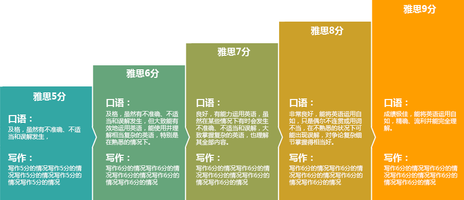

壹教壹学雅思课程体系
前期预习
前期预习分为听说读写四块的内容，团队老师将会进行网络指导，授课，检查。
- 听力场景词汇
- 阅读学术词汇
-
口语素材
万能句型 -
 写作关键句翻译，
写作关键句翻译，
句型改写，素材输入
正课

听力
传授听力做题技巧，听力听写方法为主，听力预测为辅。包括听力教研团队的“用了不走神”的圈圈大法，“一听就知答案来”的三仙答案预感法，“完美避陷阱”的女鬼识别法，将答案瞬间捕捉并写下来的“速记法”，旨在帮助大家通过找出题目的关键词和定位词，从而定位答案句，最快捷的避开陷阱做对题目，并配以精听速记特技让你不再只是“感觉听见了答案”，而是“确信清晰听懂了答案”。
口语
口语有5大问题导致学生低分1． 语言没有思路 2． 不会组织多样化的语言结构3． 对于考试本身的理解有问题4． 考试紧张脑子一片空白5． 没有练习环境去开口。我们口语教研组使用和考官一起教研出的Multi-interplay 体系帮助大家很高效的提升你的口语水平。在封闭班里我们不仅会教授学员当季考题答题思路以及提供Part 2 的素材，还会对大家常用词汇进行优化，让大家组织出来的语言符合雅思高分要求. 此外，雅思考官的参与为大家做多次口语模考，让大家上考场之前已有充分的考试状态. 在我们封闭班口语体系下，每天都会有大量的时间去开口说并且有专门的口语导师监督. 提分不再是偶然，而是必然。
阅读
打破常规阅读教学，同体系的方法教授不同基础学生的惯例。首先将考题进行难易分类，明确规划出不同基础学生的差别拿分点。针对各个基础学员的阅读速度和情况，提供阅读方法和解决方案。其次，在讲授试题时，针对基础扎实的同学，主要讲授最短时间内考点句的查找与科学的解题步骤；针对基础薄弱的学生，提供独家猜题技巧，例如在不熟悉所填单词的情况下，如何快速的找到答案解答题目。
写作
雅思写作Task1和Task2的重点题型和话题，根据评分标准的要求（内容、结构、词汇、语法）逐项提分。熟练掌握小作文的看图技巧和词汇句型；针对G类学员单独辅导书信作文。学习大作文写作的结构和思路，扩充写作词汇、短语和句型，补充高频话题素材。精讲精练，随时批改。